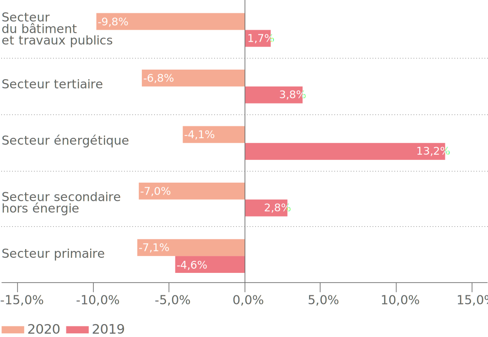

Une récession
économique
nationale de
7%
en 2020
Un déficit
budgétaire de
7.4% du PIB
L’arrêt total ou partiel des activités économiques durant le confinement a généré un double choc
sur l’offre et la demande notamment en raison de la perturbation des chaînes de valeurs, des
restrictions de mobilité et de la fermeture des frontières.
Selon le Haut-Commissariat au Plan (HCP), la croissance économique nationale a connu une
récession de 7 % en 2020 alors qu’elle avait enregistré une croissance de 2,5 % en 2019.
Du côté des finances publiques, le déficit budgétaire s’est creusé,
il se situe à 7,4 % du PIB, au lieu de 3,6 % en 2019. Ce besoin de financement a été satisfait
en partie par un recours massif au marché extérieur de la dette. Ainsi, le taux d’endettement
public global devrait s’élever à 95,6 % du PIB contre 94,6 % en 2020.
Analyse sectorielle
Reculant de 7,1 %, le secteur primaire impacte négativement la croissance du PIB de 0,9 point en
2020. Les activités secondaires (hors énergie) se sont fortement contractées, en repli de 7 %
contre une hausse de 2,8 % en 2019. Après avoir connu un net rebondissement de 16,4 % en 2019,
le secteur énergétique a enregistré une diminution de 4,1 % en 2020, suite à la baisse de
croissance de plusieurs activités industrielles. Par ailleurs, le secteur tertiaire a reculé de
6,8 %, principalement en raison de l’effondrement de la valeur ajoutée touristique qui a chuté
de 55,8 % en 2020. Enfin, le secteur du bâtiment et des travaux publics a subi un repli de 9,8
%. La branche du bâtiment, en particulier, a été sévèrement pénalisée par la crise.

Source :
rapport « Situation économique en 2020 et ses perspectives en 2021 » publié par le Haut-Commissariat
au Plan
Perspectives économiques en 2021
En 2021, le HCP prévoit une croissance de 4,6 % et table ainsi sur une reprise de la demande
extérieure adressée au Maroc favorisée par les campagnes de vaccination et au regain de
confiance de la part des ménages et des investisseurs. Ces prévisions économiques prennent
également en considération les dispositions annoncées dans la Loi de finances 2021 et supposent
la réalisation d’une bonne production céréalière.
2021
Une année de croissance.